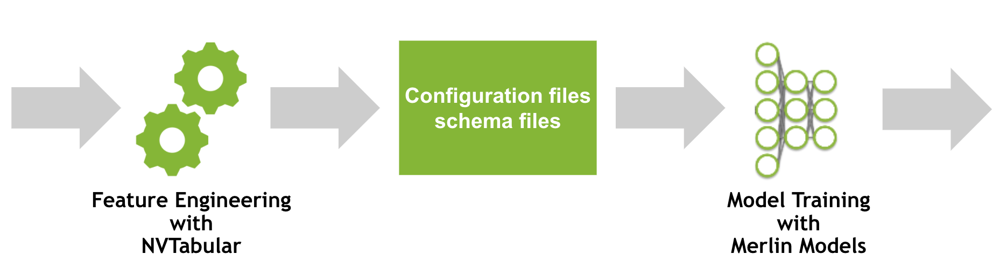

[1]:
# Copyright 2021 NVIDIA Corporation. All Rights Reserved.
#
# Licensed under the Apache License, Version 2.0 (the "License");
# you may not use this file except in compliance with the License.
# You may obtain a copy of the License at
#
# http://www.apache.org/licenses/LICENSE-2.0
#
# Unless required by applicable law or agreed to in writing, software
# distributed under the License is distributed on an "AS IS" BASIS,
# WITHOUT WARRANTIES OR CONDITIONS OF ANY KIND, either express or implied.
# See the License for the specific language governing permissions and
# limitations under the License.
# ==============================================================================

Applying to your own dataset with Merlin Models and NVTabular
Overview
In 01-getting-started.ipynb, we provide a getting started example to train a DLRM model on the MovieLens 1M dataset. In this notebook, we will explore how Merlin Models uses the ETL output from NVTabular.
Learning objectives
This notebook provides details how NVTabular and Merlin Models are linked together. We will discuss the concept of the schema file.
Merlin
Merlin is an open-source framework for building large-scale (deep learning) recommender systems. It is designed to support recommender systems end-to-end from ETL to training to deployment on CPU or GPU. Common deep learning frameworks are integrated such as TensorFlow or PyTorch. Its key benefits are the easy-to-use APIs, accelerations with GPU and scaling to multi-GPU or multi-node systems.
Merlin Models and NVTabular are components of Merlin. They are designed to work closely together.
Merlin Models is a library to make it easy for users in industry or academia to train and deploy recommender models with best practices baked into the library. This will let users in industry easily train standard models against their own dataset, getting high performance GPU accelerated models into production. This will also let researchers to build custom models by incorporating standard components of deep learning recommender models, and then benchmark their new models on example offline datasets.
NVTabular is a feature engineering and preprocessing library for tabular data that is designed to easily manipulate terabyte scale datasets and train deep learning (DL) based recommender systems. It provides high-level abstraction to simplify code and accelerates computation on the GPU using the RAPIDS Dask-cuDF library.
Integration of NVTabular and Merlin Models

We take a look on a subsequence of our pipeline. We are interested in the interactions of feature engineering and model training.
If you use NVTabular for feature engineering, in addition to the data, NVTabular will provide a schema file describing the dataset structures. NVTabular will automatically collect statistics and detect some types of Tags. For example: - Categorify: Transform categorical columns into continuous integers 0, …, |C| for embedding layers. It collects the cardinality of the embedding table and tags it as categorical. - Normalize: Normalize continuous features. It collects the mean and std of
the feature and tags it as continuous.
Some Tags have to be provided manually.
Let’s take a look on the MovieLens 1M example.
[3]:
import os
import shutil
import pandas as pd
import nvtabular as nvt
from merlin.models.utils.example_utils import workflow_fit_transform
import merlin.io
import merlin.models.tf as mm
from os import path
from nvtabular import ops
from merlin.core.utils import download_file
from merlin.models.data.movielens import get_movielens
from merlin.schema.tags import Tags
2022-03-25 18:08:06.544710: I tensorflow/core/platform/cpu_feature_guard.cc:151] This TensorFlow binary is optimized with oneAPI Deep Neural Network Library (oneDNN) to use the following CPU instructions in performance-critical operations: AVX2 AVX512F FMA
To enable them in other operations, rebuild TensorFlow with the appropriate compiler flags.
2022-03-25 18:08:07.655653: I tensorflow/core/common_runtime/gpu/gpu_device.cc:1525] Created device /job:localhost/replica:0/task:0/device:GPU:0 with 16254 MB memory: -> device: 0, name: Quadro GV100, pci bus id: 0000:15:00.0, compute capability: 7.0
We will use the utils function to download, extract and preprocess the dataset.
[4]:
train, valid = get_movielens(variant="ml-1m")
/usr/local/lib/python3.8/dist-packages/cudf/core/dataframe.py:1253: UserWarning: The deep parameter is ignored and is only included for pandas compatibility.
warnings.warn(
Understanding the Schema File and Structure
When NVTabular process the data, it will persist the schema as a file to disk. The dataset contains the schema as a property, as well.
The schema can be interpreted as a list of features in the dataset, where each element describes the feature. It contains the name, some properties (e.g. statistics) and multiple tags.
[5]:
train.schema
[5]:
[{'name': 'movieId', 'tags': {<Tags.CATEGORICAL: 'categorical'>, <Tags.ITEM: 'item'>, <Tags.ITEM_ID: 'item_id'>}, 'properties': {'num_buckets': None, 'freq_threshold': 0.0, 'max_size': 0.0, 'start_index': 0.0, 'cat_path': './/categories/unique.movieId.parquet', 'embedding_sizes': {'cardinality': 3685.0, 'dimension': 159.0}, 'domain': {'min': 0, 'max': 3685}}, 'dtype': dtype('int32'), 'is_list': False, 'is_ragged': False}, {'name': 'userId', 'tags': {<Tags.USER_ID: 'user_id'>, <Tags.CATEGORICAL: 'categorical'>, <Tags.USER: 'user'>}, 'properties': {'num_buckets': None, 'freq_threshold': 0.0, 'max_size': 0.0, 'start_index': 0.0, 'cat_path': './/categories/unique.userId.parquet', 'embedding_sizes': {'cardinality': 6041.0, 'dimension': 210.0}, 'domain': {'min': 0, 'max': 6041}}, 'dtype': dtype('int32'), 'is_list': False, 'is_ragged': False}, {'name': 'rating_binary', 'tags': {<Tags.BINARY_CLASSIFICATION: 'binary_classification'>, <Tags.TARGET: 'target'>}, 'properties': {}, 'dtype': dtype('int32'), 'is_list': False, 'is_ragged': False}]
We can select the features by Name.
[6]:
train.schema.select_by_name("userId")
[6]:
[{'name': 'userId', 'tags': {<Tags.USER_ID: 'user_id'>, <Tags.CATEGORICAL: 'categorical'>, <Tags.USER: 'user'>}, 'properties': {'num_buckets': None, 'freq_threshold': 0.0, 'max_size': 0.0, 'start_index': 0.0, 'cat_path': './/categories/unique.userId.parquet', 'embedding_sizes': {'cardinality': 6041.0, 'dimension': 210.0}, 'domain': {'min': 0, 'max': 6041}}, 'dtype': dtype('int32'), 'is_list': False, 'is_ragged': False}]
We can see, that NVTabular set the Tags user_id, user and categorical. In additionl, it collected the cardinality of the categorical features 6041. Merlin Models uses the information to define the embedding table size.
Alternatively, we can select them by Tag. We add column_names to the object to receive only names without all the additional metadata.
[7]:
# All categorical features
train.schema.select_by_tag(Tags.CATEGORICAL).column_names
[7]:
['movieId', 'userId']
[8]:
# All continuous features
train.schema.select_by_tag(Tags.CONTINUOUS).column_names
[8]:
[]
[9]:
# All targets
train.schema.select_by_tag(Tags.TARGET).column_names
[9]:
['rating_binary']
[10]:
# All features related to the item
train.schema.select_by_tag(Tags.ITEM).column_names
[10]:
['movieId']
[11]:
# All features related to the user
train.schema.select_by_tag(Tags.USER).column_names
[11]:
['userId']
The schema is a great way to combine Feature Engineering and Model Training as one end-to-end pipeline. Many popular (deep learning) recommender models define the architecture based on different feature types.
DLRM applies embedding layers to each categorical input feature and applies a MLP (called bottom MLP) to the continuous input features.
Two Tower model applies a MLP (with embedding layers for categorical features) to all item features (called item tower) and another MLP to all user features (called user tower).
The schema file contains all required information to build the architecture. If the dataset changes (e.g. more features are added), then the same code can be used to define the same architecture.
Applying NVTabular and Merlin Models to your own dataset.
We have a solid understanding of the importance of the schema and how the schema works. Let’s take a look on how to apply it to your own dataset.
The best way is to use NVTabular for the feature engineering step. We will look on a minimal example for the MovieLens dataset.
Download and prepare the data
We will download the dataset, if it is not already downloaded or cached locally.
[12]:
input_path = os.environ.get("INPUT_DATA_DIR", os.path.expanduser("~/merlin-models-data/movielens/"))
name = "ml-1m"
download_file(
"http://files.grouplens.org/datasets/movielens/ml-1m.zip",
os.path.join(input_path, "ml-1m.zip"),
)
downloading ml-1m.zip: 5.93MB [00:00, 10.6MB/s]
unzipping files: 100%|██████████████████████████████████████████████████████████████████████████████████████████████████████████████████████████████████████| 5/5 [00:00<00:00, 39.65files/s]
We preprocess the dataset and split it into training and validation.
[13]:
ratings = pd.read_csv(
os.path.join(input_path, "ml-1m/ratings.dat"),
sep="::",
names=["userId", "movieId", "rating", "timestamp"],
)
ratings = ratings.sample(len(ratings), replace=False)
num_valid = int(len(ratings) * 0.2)
train = ratings[:-num_valid]
valid = ratings[-num_valid:]
train.to_parquet(os.path.join(input_path, name, "train.parquet"))
valid.to_parquet(os.path.join(input_path, name, "valid.parquet"))
/tmp/ipykernel_24861/340885424.py:1: ParserWarning: Falling back to the 'python' engine because the 'c' engine does not support regex separators (separators > 1 char and different from '\s+' are interpreted as regex); you can avoid this warning by specifying engine='python'.
ratings = pd.read_csv(
Feature Engineering and Generating Schema File with NVTabular
We use NVTabular to define a feature engineering pipeline.
NVTabular has already implemented multiple transformations, called ops. An op can be applied to a ColumnGroup from an overloaded >> operator. Example:
features = [ column_name, ...] >> op1 >> op2 >> ...
We need to perform following steps: - Categorify userId and movieId, that the values are continuous integers from 0 … |C| - Transform the rating column to a binary target by using >3 as 1 and otherwise 0 - Add Tags with ops.AddMetadata for item_id, user_id, item, user and target.
Categorify will transform categorical columns into continuous integers 0, …, |C| for embedding layers. It collects the cardinality of the embedding table and tags it as categorical.
[14]:
cat_features = ["userId", "movieId"] >> ops.Categorify(dtype="int32")
The tags for user, userId, item and itemID cannot be inferred from the dataset. Therefore, we need to provide them manually during the NVTabular workflow. Actually, the DLRM model does not differentiate between user and item features. But other architectures, such as the Two Tower Model, depends on the user and item feature. We will show how to add them manually in a NVTabular workflow below.
[15]:
feats_itemId = cat_features["movieId"] >> ops.TagAsItemID()
feats_userId = cat_features["userId"] >> ops.TagAsUserID()
feats_target = (
nvt.ColumnSelector(["rating"])
>> ops.LambdaOp(lambda col: (col > 3).astype("int32"))
>> ops.AddTags(["binary_classification", "target"])
>> nvt.ops.Rename(name="rating_binary")
)
output = feats_itemId + feats_userId + feats_target
We apply the workflow to our dataset.
[16]:
%%time
train_path = os.path.join(input_path, name, "train.parquet")
valid_path = os.path.join(input_path, name, "valid.parquet")
output_path = os.path.join(input_path, name)
workflow_fit_transform(output, train_path, valid_path, output_path)
CPU times: user 680 ms, sys: 276 ms, total: 956 ms
Wall time: 993 ms
Training a Recommender Model with Merlin Models
We can load the data as a Merlin Dataset object. The Dataset expect the schema as .pb file in the train/valid folder, which NVTabular automatically generates.
[17]:
train = merlin.io.Dataset(os.path.join(input_path, name, "train"), engine="parquet")
valid = merlin.io.Dataset(os.path.join(input_path, name, "valid"), engine="parquet")
We can train and evaluate our model.
[18]:
model = mm.DLRMModel(
train.schema,
embedding_dim=64,
bottom_block=mm.MLPBlock([128, 64]),
top_block=mm.MLPBlock([128, 64, 32]),
prediction_tasks=mm.BinaryClassificationTask(
train.schema.select_by_tag(Tags.TARGET).column_names[0]
),
)
model.compile(optimizer="adam")
model.fit(train, batch_size=1024)
model.evaluate(valid, batch_size=1024)
2022-03-25 18:09:33.123429: W tensorflow/python/util/util.cc:368] Sets are not currently considered sequences, but this may change in the future, so consider avoiding using them.
782/782 [==============================] - 12s 10ms/step - rating_binary/binary_classification_task/precision: 0.7117 - rating_binary/binary_classification_task/recall: 0.8238 - rating_binary/binary_classification_task/binary_accuracy: 0.7068 - rating_binary/binary_classification_task/auc: 0.7685 - loss: 0.5628 - regularization_loss: 0.0000e+00 - total_loss: 0.5628
2022-03-25 18:09:47.324792: W tensorflow/core/grappler/optimizers/loop_optimizer.cc:907] Skipping loop optimization for Merge node with control input: cond/then/_0/cond/cond/branch_executed/_101
196/196 [==============================] - 3s 8ms/step - rating_binary/binary_classification_task/precision: 0.7318 - rating_binary/binary_classification_task/recall: 0.8307 - rating_binary/binary_classification_task/binary_accuracy: 0.7272 - rating_binary/binary_classification_task/auc: 0.7927 - loss: 0.5386 - regularization_loss: 0.0000e+00 - total_loss: 0.5386
[18]:
[0.7317950129508972,
0.8306925892829895,
0.7272159457206726,
0.7927199006080627,
0.5734753608703613,
0.0,
0.5734753608703613]
We can take a look on the schema.
[19]:
train.schema
[19]:
[{'name': 'movieId', 'tags': {<Tags.CATEGORICAL: 'categorical'>, <Tags.ITEM: 'item'>, <Tags.ITEM_ID: 'item_id'>}, 'properties': {'num_buckets': None, 'freq_threshold': 0.0, 'max_size': 0.0, 'start_index': 0.0, 'cat_path': './/categories/unique.movieId.parquet', 'embedding_sizes': {'cardinality': 3685.0, 'dimension': 159.0}, 'domain': {'min': 0, 'max': 3685}}, 'dtype': dtype('int32'), 'is_list': False, 'is_ragged': False}, {'name': 'userId', 'tags': {<Tags.CATEGORICAL: 'categorical'>, <Tags.USER_ID: 'user_id'>, <Tags.USER: 'user'>}, 'properties': {'num_buckets': None, 'freq_threshold': 0.0, 'max_size': 0.0, 'start_index': 0.0, 'cat_path': './/categories/unique.userId.parquet', 'embedding_sizes': {'cardinality': 6041.0, 'dimension': 210.0}, 'domain': {'min': 0, 'max': 6041}}, 'dtype': dtype('int32'), 'is_list': False, 'is_ragged': False}, {'name': 'rating_binary', 'tags': {<Tags.BINARY_CLASSIFICATION: 'binary_classification'>, <Tags.TARGET: 'target'>}, 'properties': {}, 'dtype': dtype('int32'), 'is_list': False, 'is_ragged': False}]
As we prepared only a minimal example, our schema has only tree features movieId, userId and rating_binary.
Conclusion
Feature engineering and model training are depending on each other. The schema object is a convient way to provide information from the feature engineering step to the model training step. It avoids that the user has to declare the same information mutliple times and prevents errors.
The schema defined the dataset schema and characteristics and Merlin Models can create the neural network architecture based on the information.
The dataset features will be tagged to indicate which type of feature it represents.
The recommended practice is to use NVTabular for feature engineering, which generates a schema file. NVTabular can automatically add Tags for certrain operations. For example, the output of Categorify is always a categorical feature and will be tagged. Similar, the output of Normalize is always continuous.
You can take a look on the full example of our util function for MovieLens in our repository.
Alternatively, you can manually create a schema file. We support JSON format for schema files.
Next Steps
In the next notebooks, we will explore multiple ranking models with Merlin Models.
You can learn more about NVTabular, its functionality and suppored ops by visiting our github repository or exploring the examples, such as `Getting Started MovieLens <https://github.com/NVIDIA-Merlin/NVTabular/blob/main/examples/getting-started-movielens/02-ETL-with-NVTabular.ipynb>`__ or
`Scaling Criteo <https://github.com/NVIDIA-Merlin/NVTabular/tree/main/examples/scaling-criteo>`__.